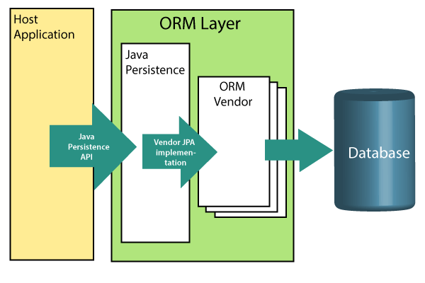
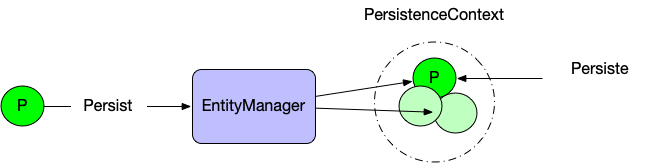
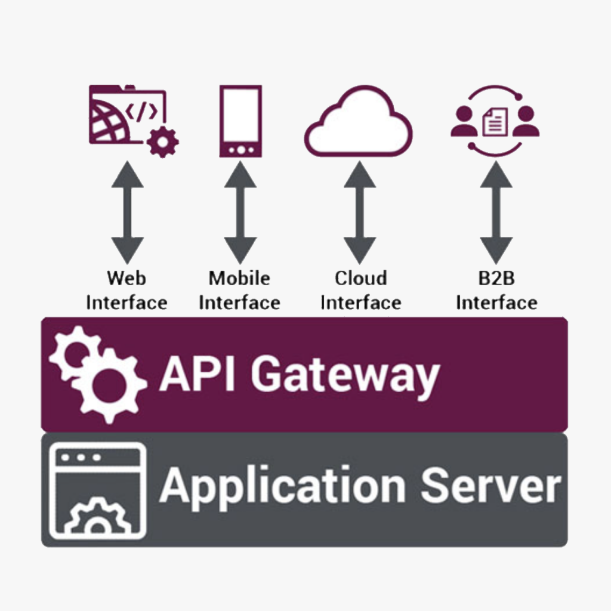
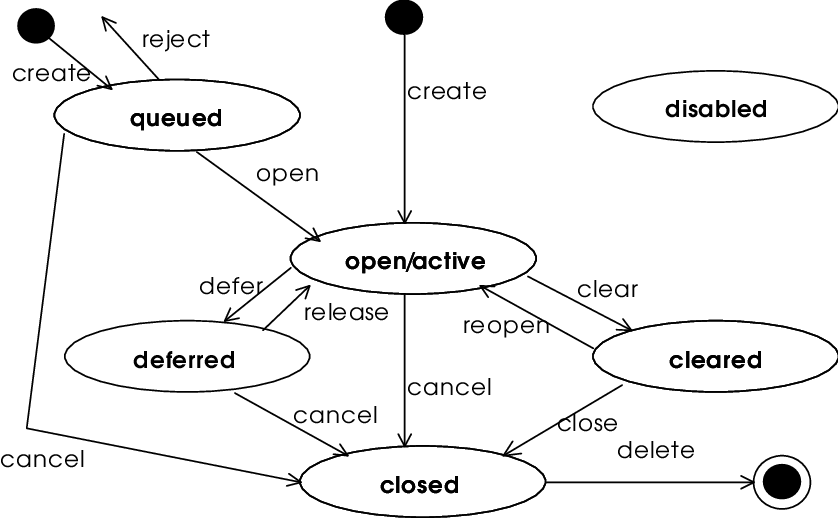
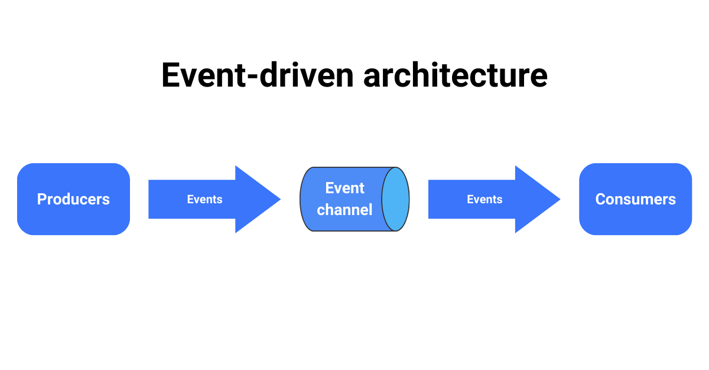

Desarrollador/Arquitecto Java
Egresado de Ingeniería Informática por el Tecnológico de Estudios Superiores de Ecatepec, con experiencia en desarrollo fullstack, enfocado al backend. Mi trayectoria ha estado en los sectores de telecomunaciones, retail y financiero. Estas son las tecnologías en las que estoy estoy especializado.
Java 8, 11, 17 y 21
Bases de datos relacionales y no relacionales
Seguridad de aplicaciones de terceros (JWT, OAuth 2.0)
CI-CD
DevOps, Cloud Computing and Services
Frontend (Angular)
Metodología SCRUM
Una visión enfocada en la mejora continua
El desarrollo no solo es código, también es conocer, implementar y mejorar tecnologías que permitan solucionar los problemas tecnológicos del sector industrial. Por eso es importante tener habilidades que permitan tener un mayor y mejor acercamiento con los stakeholders, entre los cuales se encuentran los siguientes:
Springboot/Spring Framework
Bases de datos SQL y No-SQL
Frontend (Angular)
DevOps
Desarrollo y documentación de API
Control de versisones
Seguridad de apps implementando JWT/OAuth 2.0
Arquitectura de soluciones y de software
OWASP, BPMN, SOLID
Mi recorrido profesional comenzó en tiempos difíciles (2020, durante la pandemia de COVID-19), lo que implicó la adquisición e implementación de conocimientos sobre Fullstack (Java 8 y Angular aplicados a CRUD), enfocado a la formación continua. He incursionado en los sectores retail, telecomunicaciones y financiero. Aquí muestro los proyectos y los havbilidades primordiales aplicadas en cada uno de ellos:

Basado en CRUD para el contenido de una cadena de tiendas del sector retail.

Sistema que aplica CRUD, segregación de responsabilidades y autorización de aplicaciones de terceros (OAuth)

Integración de servicios dentro de un legado en Java, que agiliza la consulta de estados de cuenta y conexión del cliente.

Integración de microservicios y eventos para notificar el avance de tickets de incidencias de servicios y conexiones a red.

Diseño, desarrollo, implementación y despliegue de módulos dentro de un monolito, con visión a futuras migraciones a arquitecturas escalables y mantenibles.